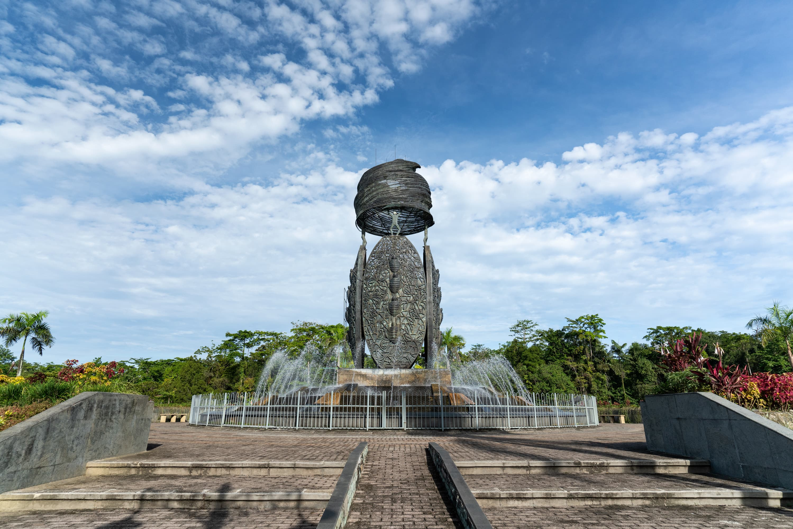

Eh Ero, Welcome di Timika! Kota kecik tapi vibenya tra kosong, laut biru jauh di selatan, bukit-bukit di utara, baru de pu angin bikin chill.
sa jalan-jalan di pasar, lihat orang jualan ikan bakar sama kopi, suara tawa anak-anak, man de pu feel itu se-seru itu ka.
Habis itu sa penasaran ke Tembagapura, area tambang iconic, machinery everywhere, tapi alam masih untouched. Seriously, contrast antara teknologi sama nature, mind-blowing!
Walaupun industrial vibes, masih ada hutan hijau, gunung tinggi, sama kali-kali jernih. sa duduk chill, angin tembagapura tabrak-tabrak muka, super heaven vibes.
Budaya Papua? Wah, mantap. Tari tradisional, musik tifa, motif pakaian colorful parah. People super friendly, senyum terus, walaupun tong cuma lewat.
Baru setiap malam, langit Timika & Tembagapura magical. Stars everywhere, lampu kota kecik di bawah, suara alam. sa bilang ke sa diri sendiri, “dis is why i travel, dis is why i explore.”
Papua lebih dari sekedar destination. It’s a vibe, a story, tempat nature, culture, sama chill energy collide. Pengalaman ini bakal stuck di sa pu kepala selamanya
Sa juga sempet lihat sunrise dari bukit, warna langit merah, orange, sama biru laut. Terasa hidup sekali. Benar-benar moment yang susah untuk dilupakan.
Sembari jalan, sa ngobrol deng local people, mereka cerita tentang festival, makanan enak, sama folklore yang bener-bener deep. sa cuma bisa bilang “wow man, dis is real Papua experience”.
Terus sa ke Danau-danau sekitar Timika, air jernih banget, refleksi gunung, vibes santai maksimal. Pokoknya setiap spot itu kayak mini paradise.
Ko bisa rasakan sendiri man, Papua tuh bukan cuma scenery saja, tapi energy dan vibe yang bikin tong merasa connected sama nature & culture. So, kalau ada chance, jangan skip explore Timika & Tembagapura.